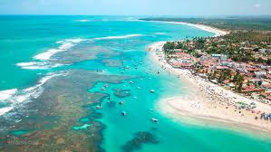

Descobrindo as Praias do Nordeste
As praias do Nordeste brasileiro são conhecidas por suas águas cristalinas, coqueirais e cenários espetaculares. Em viagens recentes, explorei trechos menos turísticos que mantêm a paisagem natural e a cultura local vivas.
Além do banho de mar, a gastronomia e as trilhas próximas às praias oferecem experiências inesquecíveis. Recomenda-se sempre respeitar áreas de preservação e comunidades locais ao planejar passeios.
